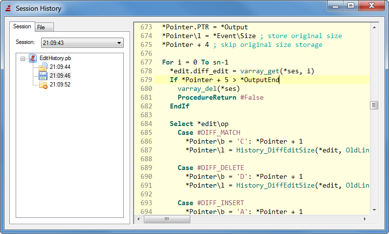

Create a new empty source code file.
Open
Open an existing source code file for editing.
Any text file will be loaded into the source-editing field. You can also load binary files with the Open menu. These will be displayed in the internal File Viewer.
Save
Saves the currently active source to disk. If the file isn't saved yet, you will be prompted for a filename. Otherwise the code will be saved in the file it was saved in before.
Save As...
Save the currently active source to a different location than it was saved before. This prompts you for a new filename and leaves the old file (if any) untouched.
Save All
Saves all currently opened sources.
Reload
Reloads the currently active source code from disk. This discards any changes not yet saved.
Close
Closes the currently active source code. If it was the only open code, the IDE will display a new empty file.
Close All
Closes all currently opened sources.
View changes
Shows the changes made to the current source code compared to its version that exists on the hard drive.
File format
In this submenu you can select the text encoding as well as the newline format which should be used when the currently active source code is saved to disk. The IDE can handle files in Ascii or UTF-8. The newline formats it can handle are Windows (CRLF), Linux/Unix (LF) and MacOSX (CR). The defaults for newly created source codes can be set in the preferences.
Preferences
Here you can change all the settings that control the look & behavior of the IDE. For a detailed description of that see Customizing the IDE.
Session history
Session history is a powerful tool which regularly records changes made to any files in a database. A session is created when the IDE launch, and is closed when the IDE quits. This is useful to rollback to a previous version of a file, or to find back a deleted or corrupted file. It's like source backup tool, limited in time (by default one month of recording). It's not aimed to replace a real source code version control system like SVN or GIT. It's complementary to have finer change trace. The source code will be stored without encryption, so if you are working on sensitive source code, be sure to have this database file in a secure location, or disable this feature. To configure the session history tool, see preferences.

Recent Files
Here you can see a list of the last accessed files. Selecting a file in this submenu will open it again.
Quit
This of course closes the IDE. You will be asked to save any non-saved source codes.